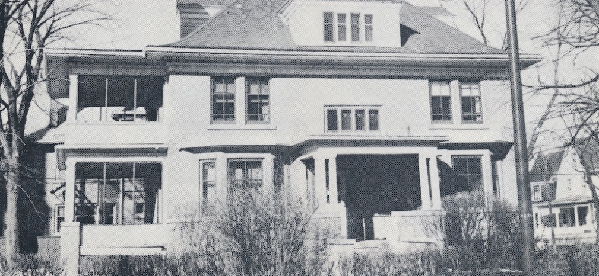

-1-MasterItem.svg)
Stories of Westminster United Church & its People / Page
144
not be aware, the manse was a gracious 3 story
house located to the north of the church, and has been
replaced by the nicely appointed small office building.)
Allen and Mildred had a life beyond Westminster
Church. They were part of an active community
of other ministers and their wives. Allen was active
in ‘ministerial politics’ meaning Presbytery and
Conference. Those were the years when Rev. Fred
Douglas led the church extension program, which Allen did not appreciate because
he believed
it would be harmful to the existing downtown churches like Knox, Young,
Augustine, Grace,
Fort Rouge and Westminster. Allen was right.
Allen was not a one dimensional person. He was a vigorous community-minded
person.
He constructed a small rink on the lawn between the manse and the church, for
use by kids in the
neighbourhood. During the famous flood of 1950 he enlisted for sand-bagging
duties to save the
newly constructed Shaarey Zedek Synagogue from serious damage. He enjoyed
bowling, curling and
golf. Well … golf was an athletic endeavour that he never mastered, and drove him to
distraction. He
was a member of a service club, and a Masonic Lodge. He enjoyed playing bridge.
He did all these
things with the same intensity he brought to his professional responsibilities.
Allen and Mildred were introduced to Kenora and environs by church members with
cottage
properties on Mackie Island on Lake of the Woods, near Keewatin. Allen acquired
a lot on the east
side of the island, and helped construct a lovely cottage that became a focal
point in the lives of the
entire family.
Allen Huband’s tenure at Westminster was about 8 years, before moving on to Kingsway Lambton
Church in Toronto. Those 8 years were formative years for our family members.
Rolph had completed
his degree in Commerce, had gone on to also graduate in law, and had begun a
career in the
secretariat of the Hudson Bay Company. (He subsequently moved to Toronto with
the Bay, becoming
corporate secretary and vice president of the corporation before his
retirement.) Mary had become an
elementary school teacher, soon to be married, and moved to Toronto and later
Ottawa, where she
Table
of Contents
Rev. Allen R. Huband
